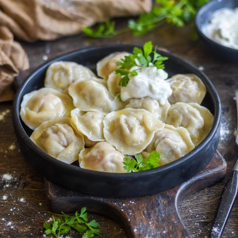

Russian Pelmeni (Meat Dumplings)

Ingredients
- All-purpose flour (for dough)
- Water & Salt (for dough)
- Ground meat (beef/pork mix recommended)
- Onion, finely chopped (for filling)
- Salt & Pepper (for filling seasoning)
Steps
- Make the dough: Mix flour, water, and a pinch of salt. Knead until smooth, then let it rest covered.
- Prepare the filling: Combine ground meat, chopped onion, salt, and pepper thoroughly.
- Assemble pelmeni: Roll out the dough thinly, cut out small circles, place a teaspoon of filling on each, fold in half, and seal the edges firmly (often pinching the corners together).
- Cook: Bring a large pot of salted water to a boil. Add pelmeni and cook until they float to the surface, then boil for another 5-7 minutes.
- Serve: Remove pelmeni with a slotted spoon and serve immediately, typically with sour cream or melted butter.
- Enjoy!
Home